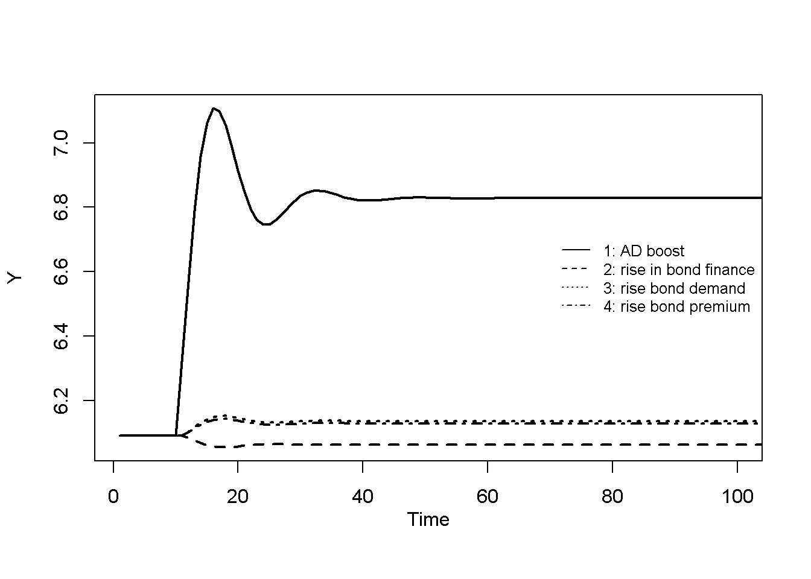
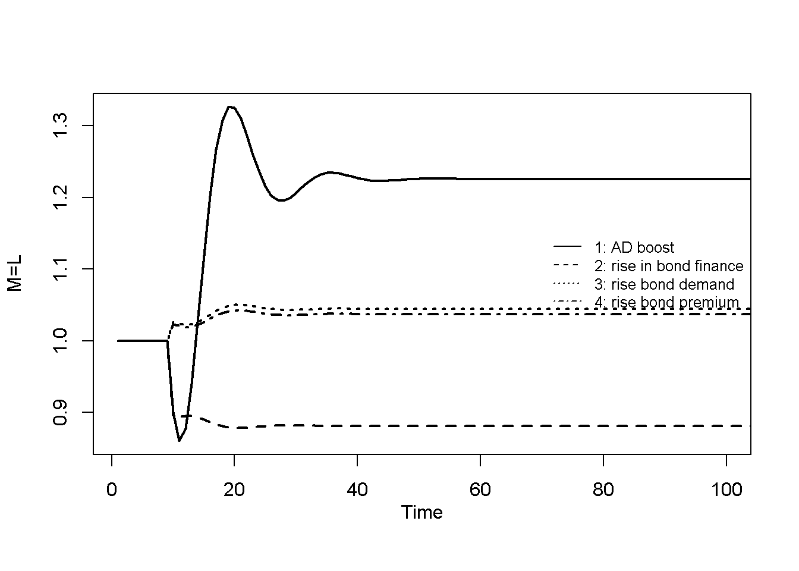
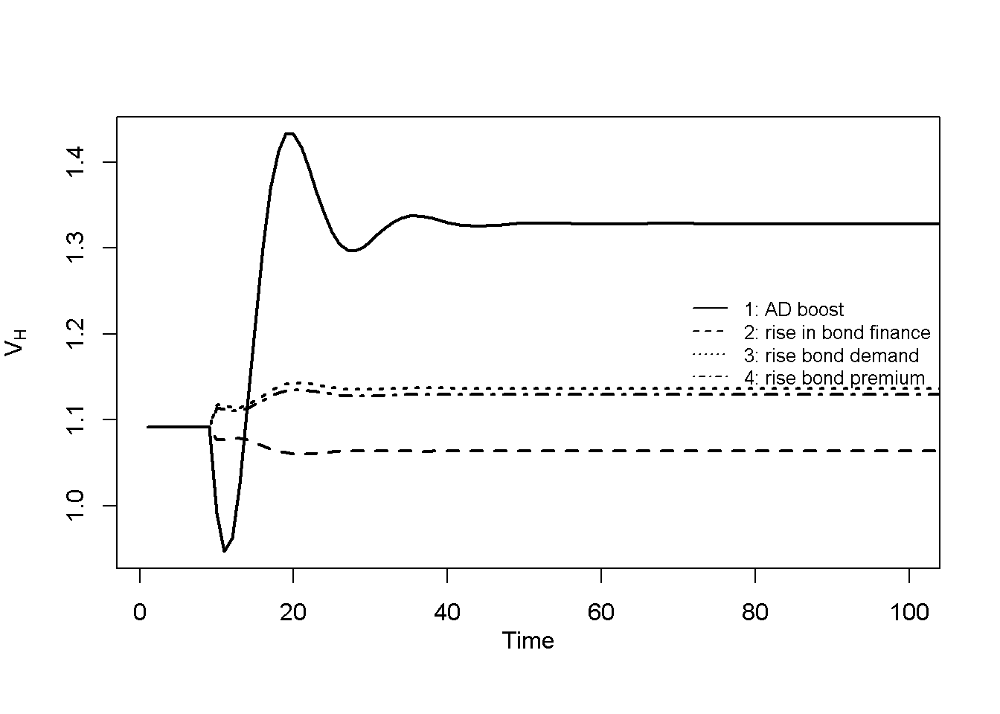
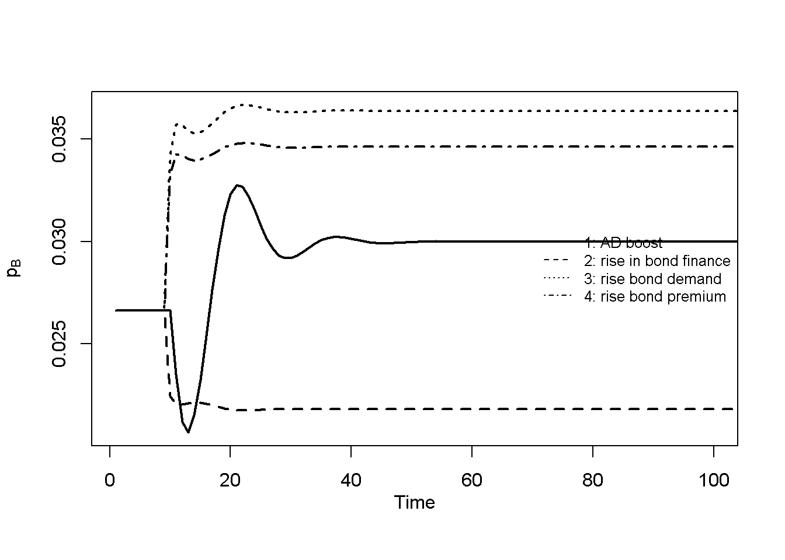
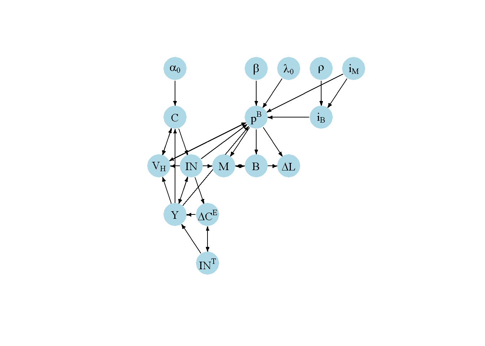

# Clear the environment
rm(list=ls(all=TRUE))
# Set number of periods
Q=300
# Set number of scenarios
S=4
# Set period in which shock/shift will occur
s=10
# Create (S x Q)-matrices that will contain the simulated data
Y=matrix(data=1,nrow=S,ncol=Q) # income/output
IN=matrix(data=1,nrow=S,ncol=Q) # inventories
IN_T=matrix(data=1,nrow=S,ncol=Q) # target inventories
C=matrix(data=1,nrow=S,ncol=Q) # consumption (= sales)
W=matrix(data=1,nrow=S,ncol=Q) # wage bill
C_E=matrix(data=1,nrow=S,ncol=Q) # expected consumption (= expected sales)
Pi=matrix(data=1,nrow=S,ncol=Q) # net profits
B=matrix(data=1,nrow=S,ncol=Q) # bonds
M=matrix(data=1,nrow=S,ncol=Q) # deposits
L=matrix(data=1,nrow=S,ncol=Q) # loans
YD=matrix(data=1,nrow=S,ncol=Q) # disposable income
V_H=matrix(data=1,nrow=S,ncol=Q) # household wealth
p_B=matrix(data=1,nrow=S,ncol=Q) # prices of bonds
i_B=matrix(data=0.1,nrow=S,ncol=Q)# interest rate on bonds
# Set constant parameter values
sigma=0.3 # inventories to sales ratio
gamma=1 # adjustment speed of sales expectations
i_L=i_M=0.01# loan rate = deposit rate
alpha_1=0.8 # propensity to consume out of income
alpha_2=0.2 # propensity to consume out of wealth
lambda_1=0.9# sensitivity of bond demand to deposit rate
lambda_2=0.3# sensitivity of bond demand to return on bonds
lambda_3=0.1# sensitivity of bond demand to disposable income
w=1 # nominal wage rate
delta=2 # productivity
# Create matrices for parameters that will change in scenarios
alpha_0=matrix(data=1,nrow=S,ncol=Q) # autonomous consumption
lambda_0=matrix(data=0.2,nrow=S,ncol=Q) # autonomous demand for bonds
rho=matrix(data=0.03,nrow=S,ncol=Q) # premium on corporate bond rate
beta=matrix(data=0.05,nrow=S,ncol=Q) # share of inventories financed by bonds
# Create scenarios
alpha_0[1, s:Q]=1.1 # scenario 1: aggregate demand boost
beta[2, s:Q]=0.1 # scenario 2: rise in share of inventories financed by bonds
lambda_0[3, s:Q]=0.3 # scenario 3: rise in autonomous demand for bonds
rho[4, s:Q]=0.04 # scenario 4: rise in corporate bond premium
# Initialise variables in equilibrium
for (iteration in 1:200){
i_B[,1]=rho[,1]+i_M
W[,1]=w*Y[,1]/delta
M[,1]=L[,1]=1
V_H[,1]=M[,1]+p_B[,1]*B[,1]
YD[,1]=Y[,1]=(alpha_0[,1] + alpha_2*V_H[,1])/(1-alpha_1)
IN[,1]=IN_T[,1]=sigma*Y[,1]
C[,1]=C_E[,1]=Y[,1]
p_B[,1]=(i_B[,1]*lambda_2)/((beta[,1]*sigma+lambda_3)*(alpha_0[,1]+alpha_2*V_H[,1])/(V_H[,1]*(1-alpha_1))-(lambda_0[,1]-lambda_1*i_M))
Pi[,1]=C[,1] - W[,1] - i_L*L[,1] - i_B[,1]*B[,1]
B[,1]=beta[,1]*IN[,1]/p_B[,1]
}
# Simulate the model by looping over Q time periods for S different scenarios
for (i in 1:S){
for (t in 2:Q){
for (iterations in 1:200){
# (1) Consumption
C[i,t] = alpha_0[i,t] + alpha_1*Y[i,t] + alpha_2*V_H[i,t-1]
# (2) Wage bill
W[i,t] = w*Y[i,t]/delta
# (3) Profits
Pi[i,t] = C[i,t] - W[i,t] - i_L*L[i,t-1] - i_B[i,t-1]*B[i,t-1] + IN[i,t] - IN[i,t-1]
# (4) Household wealth
V_H[i,t] = V_H[i,t-1] + Y[i,t] - C[i,t] + (p_B[i,t]-p_B[i,t-1])*B[i,t-1]
# (5) Household deposits
M[i,t] = V_H[i,t] - p_B[i,t]*B[i,t]
# (6) Production
Y[i,t] = C_E[i,t] + IN_T[i,t] - IN[i,t-1]
# (7) Target inventories
IN_T[i,t] = sigma*C_E[i,t]
# (8) Expected consumption (= expected sales)
C_E[i,t] = C_E[i,t-1] + gamma*(IN_T[i,t-1] - IN[i,t-1])
# (9) Inventories
IN[i,t] = IN[i,t-1] + Y[i,t]- C[i,t]
# (10) Bond supply
B[i,t] = beta[i,t]*IN[i,t-1]/p_B[i,t]
# (11) Rate on corporate bonds
i_B[i,t]=rho[i,t] + i_L
# (12) Loans
L[i,t] = L[i,t-1] + IN[i,t] - IN[i,t-1] - p_B[i,t]*(B[i,t] - B[i,t-1])
# (13) i_L = i_M (omitted from simulation because fixed)
# (14) Bond prices
p_B[i,t] = (i_B[i,t]*lambda_2)/(beta[i,t]*(IN[i,t-1]/V_H[i,t-1])-lambda_0[i,t]+lambda_1*i_M+lambda_3*(Y[i,t-1]/V_H[i,t-1]))
} # close iterations loop
} # close time loop
} # close scenarios loop
# Compute business wealth
V_F = IN - L - p_B*B20 A Stock-Flow Consistent Model of the Monetary Circuit
Overview
The stock-flow consistent (SFC) approach to macroeconomic modelling has become increasingly prominent since the 2006 publication of the foundational book Monetary Economics by Wynne Godley and Marc Lavoie.1 The SFC approach integrates the real and financial side of the economy, i.e. the physical production and consumption of goods and services, and the financial flows that arise in the course of production, consumption, and investment. As the name suggests, an SFC model covers both flows (over a certain period of time) and stocks (at a particular point in time), which are embedded in a consistent and fully coherent accounting framework. SFC models typically comprise multiple aggregate sectors, such as a household sector, a firm sector, a banking sector, a central bank, and a government. Each of these sectors makes spending and financing decisions subject to budget constraints, giving rise to physical and financial flows across sectors, which lead to changes in physical and financial stocks over time. To ensure consistent accounting, four key principles are applied (see Nikiforos and Zezza (2017)):
- Flow consistency: every transaction comes from somewhere and goes somewhere,
- Stock consistency: every financial asset is also a financial liability,
- Stock-flow consistency: flows accumulate into stocks,
- Quadruple entry book-keeping: every transaction involves a quadruple entry in accounting – two for each party of the transaction.
To illustrate these principles by means of a simple example, consider an economy with only two aggregate sectors – firms and households. Households earn wages by working for firms and spend a part of their wage income on goods, creating revenues for firms (flow consistency). If households do not spend all their wage income on consumption, firms will not receive back all the wages they paid and thus need to borrow to fill the gap. They could sell bonds to households (a liability for firms), thereby offering them a financial asset to save in (stock consistency). If households save some of their wage income in the form of bonds in every peiod, they will gradually increase their (net) wealth (stock-flow consistency). Finally, suppose households sell back some of their bonds to firms to pay for additional consumption. This will be recorded as a reduction of bond assets and an increase in consumption expenses for households, and a reduction in bond liabilities for firms coupled with an increase in revenues (quadruple entry book-keeping).
These principles are usually applied by means of two matrices that summarise the accounting structure of an SFC model: a balance sheet matrix (for stocks) and a transactions flow matrix (for flows and changes in stocks). These matrices provide a first set of equations that enter an SFC model to ensure accounting consistency. Accounting equations are then complemented by behavioural equations and equilibrium conditions that add causal assumptions to the accounting structure. Most SFC models draw on (post-)Keynesian macroeconomic theory when it comes to the behavioural assumptions. Correspondingly, most SFC models assume that economic activity is demand-determined, that households follow simple behavioural rules when making consumption decision (such as a constant marginal propensity to consume out of income), that firms operate in oligopolistic markets where they set prices based on a markup on unit cost, and that actors in financial markets make financial investment decisions based on relative rates of return. Another key feature is money endogeneity: money is created when commercial banks make loans to accommodate the demand for credit by (creditworthy) borrowers (see also Chapter 6). Like aggregate output, the stock of money is thus an endogenous variable that responds to the spending decisions of economic actors (both private and public).
The SFC approach shares a strong affinity with monetary circuit theory, which featured prominently in the work of the Italian economist Augusto Graziani (2003) and has inspired a ‘circuitist’ school within monetary economics. The key idea of the theory of the monetary circuit, following chapter 1 of Graziani (2003), is that money is credit money, which is created whenever an agent spends money granted by a bank and is destroyed when bank credit is repaid. The stock of money is thus an endogenous variable. The monetary circuit starts by the creation of new credit money to finance production (called ‘initial finance’). Credit money is then used to hire workers and pay wages. Production and sale take place, firms make revenues. Firms may additionally raise funds from households by selling securities (called ‘final finance’). Lastly, firms repay their debts whereby credit money is destroyed. Thus, according to the theory of the monetary circuit, a key role of credit money is to bridge the gap between production (which involves expenses for firms) and sales (which generate income for firms). Money must be a flexible, endogenous variable to fulfil this role. While the SFC approach and the theory of the monetary circuit were largely developed independently, Godley and Lavoie (2006), chapter 2.6, note a strong overlap between the two approaches.
In this section, we present a modified version of the model in Godley (2012), which aims to provide a formalisation of the monetary circuit.2 The Godley (2012) model features a household, firm, and banking sector (central bank and government are omitted for simplicity). Firms can take out loans from banks to finance production. Households receive income from labour and distributed profits, which they can spend on consumption or save in the form of bank deposits. For simplicity, there is no investment in physical capital, but firms maintain a stock of inventories to be able to accommodate demand.3 Taken together, the model highlights the process by which production is financed, the idea of endogenous expenditure-driven money creation, and price determination in financial markets.
The balance sheet and transaction flows matrices
The balance sheet matrix (BSM) records the distribution of physical and financial stocks across sectors. Assets carry a positive and liabilities a negative sign. The present model has three financial stocks: deposits, loans, and (corporate) bonds. The only physical asset are firms’ inventories. Stock consistency requires each row containing financial stocks to sum to zero. The columns of the BSM constitute the wealth constraints of the sectors, with the last row of each column representing the sector’s net wealth (assets minus liabilities). Since net financial wealth cancels out in the aggregate, the total net wealth is equal to the value of physical assets (inventories in this case).
In this model, households can save either in the form of deposits or corporate bonds. Firms can borrow either in the form of loans or bonds. Banks make loans to firms and issue deposits. From the BSM, it follows that \(M=L\), i.e. the stock of loans is equal to the stock of money. This illustrates at an elementary level, before having made any behavioural assumptions, the tight relationship between money and credit emphasised in both the SFC and monetary circuit approaches.
Table 1: Balance Sheet Matrix
| Households | Firms | Banks | ∑ | |
|---|---|---|---|---|
| Inventories | \(+IN\) | \(+IN\) | ||
| Deposits | \(+M\) | \(–M\) | 0 | |
| Loans | \(–L\) | \(+L\) | 0 | |
| Bonds | \(+p^B B\) | \(–p^B B\) | 0 | |
| ∑ (Net wealth) | \(V_H\) | \(V_F = IN – L – p^B B\) | 0 | \(+IN\) |
The transactions flow matrix (TFM) records flows across sectors. Sources of funds are denoted with a plus sign, and uses of funds with a minus sign. The TFM’s rows can be categorised into three groups. The first set of rows captures expenditures flows that make up total production (GDP): consumption and inventory investment. The second set of rows captures the corresponding income flows: wages and net profits plus financial income streams (interest payments/income on the three financial stocks in our case). The third set of rows reports changes in financial stocks that result from the difference between income and expenditure for each sector. Flow consistency across sectors requires each row to sum to zero. In addition, each sector needs to respect its budget constraint given by its column, which must also sum to zero. In our model, prices of corporate bonds may change endogenously; thus, there is a separate row at the bottom of the TFM reporting capital gains. The account of the corporate sector is split into a current and a capital account. This division makes explicit transactions taking place within the corporate sector. For example, inventory accumulation is an income for the firm sector (reported in the current account), but also an expenditure (reported in the capital account).
Table 2: Transactions Flow Matrix
| Households | Firms (Current) | Firms (Capital) | Banks | ∑ | |
|---|---|---|---|---|---|
| Consumption | \(–C\) | \(+C\) | 0 | ||
| Inventory investment | \(+\Delta IN\) | \(– \Delta IN\) | 0 | ||
| Wages | \(+W\) | \(–W\) | 0 | ||
| Net profits | \(+\Pi\) | \(–\Pi\) | 0 | ||
| Interest on deposits | \(+i_M M\) | \(–i_M M\) | 0 | ||
| Interest on loans | \(–i_L L\) | \(+i_L L\) | 0 | ||
| Interest on bonds | \(+i_B B\) | \(–i_B B\) | 0 | ||
| Change in deposits | \(–\Delta M\) | \(+ \Delta M\) | 0 | ||
| Change in loans | \(+\Delta L\) | \(– \Delta L\) | 0 | ||
| Change in bonds | \(–\Delta B p^B\) | \(+ \Delta B p^B\) | 0 | ||
| ∑ | 0 | 0 | 0 | 0 | 0 |
| Capital gains | \(–\Delta p^B B\) | \(+ \Delta p^B B\) |
In this model, total output/income \(Y\) is composed of expenditures on consumption and inventories, which is equal to wages plus gross profits:
\[ Y=C +\Delta IN = W + \Pi + i_LL + i_bB. \] The sectoral budget constraints are key to understand the financing decisions of each sectors. Starting with households, we know from the BSM that their net wealth consists of deposits and bonds: \(V_H=M+p^BB\). Thus, the change in their net wealth is given by \(\Delta V_H=\Delta M +\Delta Bp + \Delta pB\), where \(\Delta p^B B\) represents capital gains on bonds. Using the output equation and the first column of the BSM, we have:
\[ \Delta V_H = Y - C + \Delta pB, \]
where \(Y-C=\Delta M + \Delta B\), meaning that households can save either in the form of money or bonds, and that their total change in wealth is given by saving in those assets plus capital gains. Note that we assume that all net profits are distributed to the household sector.
From the capital account column of the TFM, we obtain the budget constraint of the firm sector:
\[ \Delta L + p^B \Delta B = \Delta IN, \] which tells us that expenditures on inventories can be covered either by taking out loans or by issuing corporate bonds.
We will use these fundamental accounting relationships in the model equations below to ensure stock-flow consistency.
The model
Households \[ C_t = \alpha_0 + \alpha_1 Y_t + \alpha_2 V_{Ht-1} \tag{20.1}\]
\[ W_t = \frac{wY_t}{\delta} \tag{20.2}\]
\[ \Pi_t=C_t - W_t - i_L L_{t-1} - i_B B_{t-1} + IN_t - IN_{t-1} \tag{20.3}\]
\[ V_{Ht} = V_{Ht-1} + Y_t - C_t + (p^B_t - p^B_{t-1})B_t \tag{20.4}\] \[ M_t= V_{Ht} - p^BB_t \tag{20.5}\]
Firms \[ Y_t = C_t^e + IN^T_t - IN_{t-1} \tag{20.6}\]
\[ IN^T_t = \sigma C_t^e \tag{20.7}\]
\[ C^e_t = C^e_{t-1} + \gamma(IN^T_{t-1} - IN_{t-1}) \tag{20.8}\]
\[ IN_t = IN_{t-1} + Y_t - C_t \tag{20.9}\]
\[ B_t = \frac{\beta IN_{t-1}}{p^B_t} \tag{20.10}\]
\[ i_B = \rho + i_L \tag{20.11}\]
\[ L_t = L_{t-1} + IN_t - IN_{t-1} - p^B_t(B_t - B_{t-1}) \tag{20.12}\]
Banks \[ i_L = i_M \tag{20.13}\]
Bond market \[ p^B_t = \frac{i_B \lambda_2}{\beta \frac{IN_{t-1}}{V_{Ht-1}} - \lambda_0 + \lambda_1 i_M + \lambda_3 \frac{Y_{t-1}}{V_{Ht-1}}} \tag{20.14}\]
where stocks, flows, interest rates, and bond prices are defined as in Tables 1 and 2 above, and \(C^e_t\) and \(IN^T_t\) represent expected consumption (= expected sales) and the target stock of inventories, respectively.
Equation 20.1 is the consumption function – one of the model’s key behavioural equations. It assumes that consumption is a function of current income \(Y_t\), previous period’s household wealth \(V_{Ht-1}\), and an autonomous component \(\alpha_0\), with fixed marginal propensities, \(\alpha_1\) and \(\alpha_2\), to consume out of income and wealth. Equation 20.2 specifies the determination of the aggregate wage bill, a component of household income. The nominal wage rate \(w\) is assumed to be fixed, while total employment \(N\) is determined in a Keynesian fashion by total output in conjunction with a given level of labour productivity \(\delta=\frac{Y}{N}\), i.e. \(N=\frac{Y}{\delta}\).4 Equation 20.3 defines profits (derived from the firms’ current account column of the TFM), which are fully distributed to the household sector. Note that in the definition of profits, inventory investment is recorded as a source of income for firms, i.e. they are treated as if they had been sold. Equation 20.4 specifies wealth dynamics of households as derived in the previous section from the first column of the TFM. Equation 20.5 represents the wealth constraint of households (the first column of the BSM), where it is assumed that deposits \(M\) act as the residual: households allocate their wealth they don’t want to hold in the form of bonds into deposits.
Moving on to firms, Equation 20.6 specifies their production decisions. Firms produce output to meet expected sales (= expected consumption \(C_t^e\)) and to hit their target stock of inventories \(IN^T_t\). By Equation 20.7, they aim to maintain a fixed ratio \(\sigma\) of inventories to expected sales – a simple heuristic to deal with the intrinsic uncertainty over realised sales. In the same vein, Equation 20.8 constitutes a simple adaptive rule to update sales expectations based on past deviations of actual inventories from target. If, for example, actual inventories exceeded target inventories due to a slump in sales, the term in brackets in Equation 20.8 will be negative. Firms take this as a sign of weak demand, which they extrapolate into the future and thus reduce their sales expectations. Equation 20.9 is an accounting identity derived from TFM in the previous section and states that inventories accumulate whenever production exceeds sales. Observe that Equation 20.6 and Equation 20.9 can be combined to give \(IN_t - IN_t^T = C_t^E - C_t\), showing that expectational errors on the side of firms give rise to deviations of the actual stock of inventories from target.
The next three equations specify the financial decisions of firms. By Equation 20.10, firms finance a fixed share \(\beta\) of their inventories through bond issuance (where bonds are measured at market value). The parameter \(\beta\) thus captures the liability management of firms. Firms also set a fixed interest rate (or ‘coupon rate’) on bonds \(i_B\) (Equation 20.11), using a fixed markup or premium \(\rho\) on the lending rate \(i_L\). Equation 20.12 represents firms’ budget constraint as derived from the TFM. With bond issuance pinned down behaviourally by Equation 20.10, loan issuance becomes the residual item of the firm sector’s budget constraint, ensuring that any expenditures on inventories that are not financed by bond issuance are covered by loans.
The banking sector in this model is kept very simple. Banks make loans and issue deposits. They charge the same rate on loans \(i_L\) as they pay on deposits \(i_M\) (Equation 20.13), implying that they don’t make any profits.
Finally, equation Equation 20.14 represents the determination of corporate bond prices on financial markets. This equation is derived from the portfolio choice decisions of households, where it is assumed that households’ desired share of bonds (at market value) in their total wealth is a function of rates of return as well as household income. Specifically, the underlying portfolio equation is:
\[ \frac{p^B_tB^D_t}{V_{Ht-1}} = \lambda_0 - \lambda_1 i_M + \lambda_2 \frac{i_B}{p^B_t} - \lambda_3 \frac{Y_t}{V_{Ht-1}}. \] The term \(\lambda_0\) represents autonomous demand for bonds (which is inversely related to liquidity preference, i.e. the autonomous demand for deposits) and the negative term \(\lambda_1 i_M\) captures the foregone returns from holding deposits instead of bonds. The term \(\lambda_2 \frac{i_B}{p^B_t}\) captures the positive effect of bond yields on bond demand. Note that we assume a fixed face value (or ‘par value’) of bonds of unity, so that the coupon rate coincides with the interest payments on the bond. Thus, \(\frac{i_B}{p^B_t}\) is the yield on corporate bonds, which is inversely related to bond prices. The last term in the bond demand equation represents the negative effect of income (relative to wealth) on bond demand, which stems from the transactions demand for deposit money. Using this equation for the bond demand of households with the bond supply of firms given by Equation 20.10, imposing equilibrium, and solving for \(p^B_t\) gives Equation 20.14.
With 14 equations, this comparatively simple model illustrates a common feature of SFC models: the number of equations is typically large. Two points are worth noting in this regard. First, our representation of the model is already relatively parsimonious in that it focuses on the equations that are used in the simulation. For example, Equation 20.14 has been derived from underlying equations about portfolio choice and an equilibrium condition that we did not list above. Similarly, we did not add to the list of equations some relatively trivial facts, e.g. that sales are equal to consumption expenditures, or chose not to track certain variables such as total employment, prices, and the wage share. One could add these equations if one wanted to make some of these assumptions or implied results more explicit. Second, and more importantly, several of the model’s accounting equations are actually irrelevant for its results. Specifically, out of the five accounting equations (Equation 20.3, Equation 20.4, Equation 20.5, Equation 20.9, Equation 20.12) only two, the equations for household wealth and inventory accumulation (Equation 20.4 and Equation 20.9) feed into the model’s dynamics via their impact on consumption and production, respectively. By contrast, the equations for profits (Equation 20.3), household deposits (Equation 20.5), and loans (Equation 20.12) are residuals that ensure accounting consistency, but do not impact the other variables of the model, and can therefore be dropped. Thus, while SFC models often appear very large, this is partly a presentational feature stemming from the ambition to make all assumptions (both structural and accounting) explicit. It is useful to bear in mind that the actual core of a model generating its results might be much smaller.
Simulation
Parameterisation
Tables 3a and 3b report the parameterisation used in the simulation. In each scenario, we initialise the model in the steady state and assess the effect of (permanent) shifts in a parameter from a certain period onwards. The first scenario is an increase in autonomous consumption demand (\(\alpha_0\)). The second scenario is a rise in the share of inventories \(\beta\) that is financed by bonds. Scenario 3 is a rise in the autonomous demand for bonds by households (\(\lambda_0\)). Finally, scenario 4 considers a rise in the corporate bond premium \(\rho\) offered by firms.
Table 3a: Parameterisation
| Scenario | \(\alpha_0\) | \(\alpha_1\) | \(\alpha_2\) | \(w\) | \(\delta\) | \(\sigma\) | \(\gamma\) | \(\beta\) | \(\rho\) | \(i_M\) |
|---|---|---|---|---|---|---|---|---|---|---|
| 1: aggregate demand boost (\(\alpha_0\)) | 1.1 | 0.8 | 0.2 | 1 | 2 | 0.3 | 1 | 0.05 | 0.03 | 0.01 |
| 2: rise in share bond-financed inventories (\(\beta\)) | 1 | 0.8 | 0.2 | 1 | 2 | 0.3 | 1 | 0.1 | 0.03 | 0.01 |
| 3: rise in autonomous demand for bonds (\(\lambda_0\)) | 1 | 0.8 | 0.2 | 1 | 2 | 0.3 | 1 | 0.05 | 0.03 | 0.01 |
| 4: rise in corporate bond premium (\(\rho\)) | 1 | 0.8 | 0.2 | 1 | 2 | 0.3 | 1 | 0.05 | 0.04 | 0.01 |
Table 3b: Parameterisation (continued)
| Scenario | \(\lambda_0\) | \(\lambda_1\) | \(\lambda_2\) | \(\lambda_3\) |
|---|---|---|---|---|
| 1: aggregate demand boost (\(\alpha_0\)) | 0.2 | 0.9 | 0.3 | 0.1 |
| 2: rise in share bond-financed inventories (\(\beta\)) | 0.2 | 0.9 | 0.3 | 0.1 |
| 3: rise in autonomous demand for bonds (\(\lambda_0\)) | 0.3 | 0.9 | 0.3 | 0.1 |
| 4: rise in corporate bond premium (\(\rho\)) | 0.2 | 0.9 | 0.3 | 0.1 |
Simulation code
Python code
import numpy as np
# Set number of periods
Q = 300
# Set number of scenarios
S = 4
# Set period in which shock/shift will occur
s = 10
# Create (S x Q)-matrices that will contain the simulated data
Y = np.ones((S, Q)) # income/output
IN = np.ones((S, Q)) # inventories
IN_T = np.ones((S, Q)) # target inventories
C = np.ones((S, Q)) # consumption (= sales)
W = np.ones((S, Q)) # wage bill
C_E = np.ones((S, Q)) # expected consumption (= expected sales)
Pi = np.ones((S, Q)) # net profits
B = np.ones((S, Q)) # bonds
M = np.ones((S, Q)) # deposits
L = np.ones((S, Q)) # loans
YD = np.ones((S, Q)) # disposable income
V_H = np.ones((S, Q)) # household wealth
p_B = np.ones((S, Q)) # prices of bonds
i_B = np.full((S, Q), 0.1) # interest rate on bonds
# Set constant parameter values
sigma = 0.3 # inventories to sales ratio
gamma = 1 # adjustment speed of sales expectations
i_L = i_M = 0.01 # loan rate = deposit rate
alpha_1 = 0.8 # propensity to consume out of income
alpha_2 = 0.2 # propensity to consume out of wealth
lambda_1 = 0.9 # sensitivity of bond demand to deposit rate
lambda_2 = 0.3 # sensitivity of bond demand to return on bonds
lambda_3 = 0.1 # sensitivity of bond demand to disposable income
w = 1 # nominal wage rate
delta = 2 # productivity
# Create matrices for parameters that will change in scenarios
alpha_0 = np.ones((S, Q)) # autonomous consumption
lambda_0 = np.full((S, Q), 0.2) # autonomous demand for bonds
rho = np.full((S, Q), 0.03) # premium on corporate bond rate
beta = np.full((S, Q), 0.05) # share of inventories financed by bonds
# Create scenarios
alpha_0[0, s:] = 1.1 # scenario 1: aggregate demand boost
beta[1, s:] = 0.1 # scenario 2: rise in share of inventories financed by bonds
lambda_0[2, s:] = 0.3 # scenario 3: rise in autonomous demand for bonds
rho[3, s:] = 0.04 # scenario 4: rise in corporate bond premium
# Initialise variables in equilibrium
for iteration in range(200):
i_B[:, 0] = rho[:, 0] + i_M
W[:, 0] = w * Y[:, 0] / delta
M[:, 0] = L[:, 0] = 1
V_H[:, 0] = M[:, 0] + p_B[:, 0] * B[:, 0]
Y[:, 0] = YD[:, 0] = (alpha_0[:, 0] + alpha_2 * V_H[:, 0]) / (1 - alpha_1)
IN[:, 0] = IN_T[:, 0] = sigma * Y[:, 0]
C[:, 0] = C_E[:, 0] = Y[:, 0]
p_B[:, 0] = (i_B[:, 0] * lambda_2) / (
(beta[:, 0] * sigma + lambda_3) *
(alpha_0[:, 0] + alpha_2 * V_H[:, 0]) /
(V_H[:, 0] * (1 - alpha_1)) -
(lambda_0[:, 0] - lambda_1 * i_M)
)
Pi[:, 0] = C[:, 0] - W[:, 0] - i_L * L[:, 0] - i_B[:, 0] * B[:, 0]
B[:, 0] = beta[:, 0] * IN[:, 0] / p_B[:, 0]
# Simulate the model by looping over Q time periods for S different scenarios
for i in range(S):
for t in range(1, Q):
for iteration in range(200):
# (1) Consumption
C[i, t] = alpha_0[i, t] + alpha_1 * Y[i, t] + alpha_2 * V_H[i, t-1]
# (2) Wage bill
W[i, t] = w * Y[i, t] / delta
# (3) Profits
Pi[i, t] = (C[i, t] - W[i, t] - i_L * L[i, t-1] -
i_B[i, t-1] * B[i, t-1] +
IN[i, t] - IN[i, t-1])
# (4) Household wealth
V_H[i, t] = (V_H[i, t-1] + Y[i, t] - C[i, t] +
(p_B[i, t] - p_B[i, t-1]) * B[i, t-1])
# (5) Household deposits
M[i, t] = V_H[i, t] - p_B[i, t] * B[i, t]
# (6) Production
Y[i, t] = C_E[i, t] + IN_T[i, t] - IN[i, t-1]
# (7) Target inventories
IN_T[i, t] = sigma * C_E[i, t]
# (8) Expected consumption (= expected sales)
C_E[i, t] = C_E[i, t-1] + gamma * (IN_T[i, t-1] - IN[i, t-1])
# (9) Inventories
IN[i, t] = IN[i, t-1] + Y[i, t] - C[i, t]
# (10) Bond supply
B[i, t] = beta[i, t] * IN[i, t-1] / p_B[i, t]
# (11) Rate on corporate bonds
i_B[i, t] = rho[i, t] + i_L
# (12) Loans
L[i, t] = (L[i, t-1] + IN[i, t] - IN[i, t-1] -
p_B[i, t] * (B[i, t] - B[i, t-1]))
# (13) i_L = i_M (omitted from simulation because fixed)
# (14) Bond prices
p_B[i, t] = (i_B[i, t] * lambda_2) / (
beta[i, t] * (IN[i, t-1] / V_H[i, t-1]) -
lambda_0[i, t] + lambda_1 * i_M +
lambda_3 * (Y[i, t-1] / V_H[i, t-1])
)
# Compute business wealth
V_F = IN - L - p_B * BChecking stock-flow consistency
Before plotting the simulation results for the different scenarios, we perform a stock-flow consistency check by computing the BSM and TFM from the simulated data. To this end, we construct two functions that compute the corresponding matrices for any chosen period and scenario. Let’s start with the BSM and print the results for the first and last period of the first scenario.
#### Define function to create balance sheet matrices (BSM)
bsm = function(t, scen) {
# Pull data from selected period and scenario
data = list(
M = M[scen, t],
B = B[scen, t],
L = L[scen, t],
IN = IN[scen, t],
p_B = p_B[scen, t],
V_H = V_H[scen, t],
V_F = V_F[scen, t]
)
# Households column
households=c(
"", # inventories
sprintf("+%.2f",data$M), # deposits
"", # loans
sprintf("+%.2f",data$p_B*data$B), # bonds
sprintf("+%.2f",data$V_H) # net worth
)
# Firms column
firms=c(
sprintf("+%.2f", data$IN), # inventories
"", # deposits
sprintf("-%.2f", data$L), # loans
sprintf("-%.2f", data$p_B*data$B), # bonds
sprintf("%.2f", data$V_F) # net worth
)
# Banks column
banks=c(
"", # inventories
sprintf("-%.2f", data$M), # deposits
sprintf("+%.2f", data$L), # loans
"", # loans
sprintf("%.2f", data$M - data$L) # net worth
)
# Summation column
sum_col = c(
sprintf("+%.2f", data$IN),
"0", "0", "0",
sprintf("+%.2f", data$V_H+data$V_F)
)
# Combine columns to a matrix
bsm=cbind(
Households = households,
Firms = firms,
Banks = banks,
`∑` = sum_col
)
# Assign rownames
rownames(bsm) = c("Inventories", "Deposits", "Loans", "Bonds", "∑")
return(bsm)
}# Print BSM of first scenario for first period
print(bsm(t=1, scen=1), quote = FALSE, right = TRUE) Households Firms Banks ∑
Inventories +1.83 +1.83
Deposits +1.00 -1.00 0
Loans -1.00 +1.00 0
Bonds +0.09 -0.09 0
∑ +1.09 0.74 0.00 +1.83# Print BSM of first scenario for last period
print(bsm(t=Q, scen=1), quote = FALSE, right = TRUE) Households Firms Banks ∑
Inventories +2.05 +2.05
Deposits +1.23 -1.23 0
Loans -1.23 +1.23 0
Bonds +0.10 -0.10 0
∑ +1.33 0.72 -0.00 +2.05It can be seen that the last row and last column sum to the same value, i.e. \(V_H+V_F=IN\), reflecting stock consistency.5
Now we do the same thing for the TFM (note that we need to use the second period instead of the first, as the TFM contains flows).
#### Define function to create transactions flow matrices (TFM)
tfm=function(t, scen){
# Pull data from selected period and scenario
data = list(
C = C[scen,t],
W = W[scen,t],
Pi = Pi[scen,t],
M = M[scen,t-1],
L = L[scen,t-1],
B = B[scen,t-1],
i_B = i_B[scen,t-1],
dM = M[scen,t]-M[scen,(t-1)],
dL = L[scen,t]-L[scen,(t-1)],
dB = p_B[scen,t]*(B[scen,t]-B[scen,(t-1)]),
dIN = IN[scen,t]-IN[scen,(t-1)],
dp_B = B[scen,(t-1)]*(p_B[scen,t]-p_B[scen,(t-1)])
)
# Households column
households=c(
sprintf("-%.2f", data$C), # consumption
"", # change in inventories
sprintf("+%.2f", data$W), # wages
sprintf("+%.2f", data$Pi), # net profits
sprintf("+%.2f", i_M*data$M), # interest on deposits
"", # interest on loans
sprintf("+%.2f", data$i_B*data$B),# interest on bonds
sprintf("-%.2f", data$dM), # change in deposits
"", # change in loans
sprintf("-%.2f", data$dB), # change in bonds
sprintf("%.2f",-data$C+data$W+data$Pi+i_M*data$M+data$i_B*data$B-data$dM-data$dB), # sum
sprintf("-%.2f", data$dp_B) # capital gains
)
# Firms current account column
firms_current=c(
sprintf("+%.2f", data$C), # consumption
sprintf("+%.2f", data$dIN), # change in inventories
sprintf("-%.2f", data$W), # wages
sprintf("-%.2f", data$Pi), # net profits
"", # interest on deposits
sprintf("-%.2f", i_L*data$L), # interest on loans
sprintf("-%.2f", data$i_B*data$B),# interest on bonds
"", "", "", # change in deposits/loans/bonds
sprintf("%.2f", data$C+data$dIN-data$W-data$Pi-i_L*data$L-data$i_B*data$B), # sum
"" # capital gains
)
# Firms capital account column
firms_capital=c(
"", # consumption
sprintf("-%.2f", data$dIN), # change in inventories
"", "", "", "", "", "", # wages/profits/interest payments/change in deposits
sprintf("+%.2f", data$dL), # change in loans
sprintf("+%.2f", data$dB), # change in bonds
sprintf("%.2f", -data$dIN+data$dL+data$dB),# sum
sprintf("+%.2f", data$dp_B) # capital gains
)
# Banks column
banks=c(
"", "", "", "", # consumption/inventories/wages/profits
sprintf("-%.2f", i_M*data$M), # interest on deposits
sprintf("+%.2f", i_L*data$L), # interest on loans
"", # interest on bonds
sprintf("+%.2f", data$dM), # change in deposits
sprintf("-%.2f", data$dL), # change in loans
"", # change in bonds
sprintf("%.2f", -i_M*data$M+i_L*data$L+data$dM-data$dL), # sum
"" # capital gains
)
# Summation column
sum_col=c(rep("0", 12))
# Combine columns to a matrix
tfm=cbind(
Households = households,
`Firms (Cur)` = firms_current,
`Firms (Cap)` = firms_capital,
Banks = banks,
`∑` = sum_col
)
# Assign rownames
rownames(tfm)=c(
"Consumption", "Change in inventories", "Wages", "Net profits",
"Interest on deposits", "Interest on loans", "Interest on bonds",
"Change in deposits", "Change in loans", "Change in bonds",
"∑", "Capital gains"
)
return(tfm)
}# Print TFM of first scenario for second period
print(tfm(t=2, scen=1), quote = FALSE, right = TRUE) Households Firms (Cur) Firms (Cap) Banks ∑
Consumption -6.09 +6.09 0
Change in inventories +0.00 -0.00 0
Wages +3.05 -3.05 0
Net profits +2.90 -2.90 0
Interest on deposits +0.01 -0.01 0
Interest on loans -0.01 +0.01 0
Interest on bonds +0.14 -0.14 0
Change in deposits -0.00 +0.00 0
Change in loans +0.00 -0.00 0
Change in bonds -0.00 +0.00 0
∑ -0.00 -0.00 0.00 0.00 0
Capital gains --0.00 +-0.00 0# Print TFM of first scenario for last period
print(tfm(t=Q, scen=1), quote = FALSE, right = TRUE) Households Firms (Cur) Firms (Cap) Banks ∑
Consumption -6.83 +6.83 0
Change in inventories +0.00 -0.00 0
Wages +3.41 -3.41 0
Net profits +3.27 -3.27 0
Interest on deposits +0.01 -0.01 0
Interest on loans -0.01 +0.01 0
Interest on bonds +0.14 -0.14 0
Change in deposits -0.00 +0.00 0
Change in loans +0.00 -0.00 0
Change in bonds -0.00 +0.00 0
∑ 0.00 -0.00 0.00 0.00 0
Capital gains -0.00 +0.00 0The fact that all column sum to zero affirms flow consistency.
Python code
### SFC check
import pandas as pd
# Define function to create balance sheet matrices (BSM)
def bsm(t, scen):
# Pull data from selected period and scenario
data = {
"M": M[scen, t],
"B": B[scen, t],
"L": L[scen, t],
"IN": IN[scen, t],
"p_B": p_B[scen, t],
"V_H": V_H[scen, t],
"V_F": V_F[scen, t]
}
# Households column
households = [
"", # inventories
f"+{data['M']:.2f}", # deposits
"", # loans
f"+{data['p_B'] * data['B']:.2f}", # bonds
f"+{data['V_H']:.2f}" # net worth
]
# Firms column
firms = [
f"+{data['IN']:.2f}", # inventories
"", # deposits
f"-{data['L']:.2f}", # loans
f"-{data['p_B'] * data['B']:.2f}", # bonds
f"{data['V_F']:.2f}" # net worth
]
# Banks column
banks = [
"", # inventories
f"-{data['M']:.2f}", # deposits
f"+{data['L']:.2f}", # loans
"", # bonds
f"{data['M'] - data['L']:.2f}" # net worth
]
# Summation column
sum_col = [
f"+{data['IN']:.2f}",
"0", "0", "0",
f"+{data['V_H'] + data['V_F']:.2f}"
]
# Combine into a DataFrame
bsm_df = pd.DataFrame({
"Households": households,
"Firms": firms,
"Banks": banks,
"∑": sum_col
}, index=["Inventories", "Deposits", "Loans", "Bonds", "∑"])
return bsm_df
# Print BSM of first scenario for first period
# (Note: Python uses 0-based indexing, so t=0, scen=0)
print(bsm(t=0, scen=0).to_string(index=True))
# Print BSM of first scenario for last period
print(bsm(t=Q-1, scen=0).to_string(index=True))
#### Define function to create transactions flow matrices (TFM)
def tfm(t, scen):
# Pull data from selected period and scenario
data = {
"C": C[scen, t],
"W": W[scen, t],
"Pi": Pi[scen, t],
"M": M[scen, t-1],
"L": L[scen, t-1],
"B": B[scen, t-1],
"i_B": i_B[scen, t-1],
"dM": M[scen, t] - M[scen, t-1],
"dL": L[scen, t] - L[scen, t-1],
"dB": p_B[scen, t] * (B[scen, t] - B[scen, t-1]),
"dIN": IN[scen, t] - IN[scen, t-1],
"dp_B": B[scen, t-1] * (p_B[scen, t] - p_B[scen, t-1])
}
# Households column
households = [
f"-{data['C']:.2f}", # consumption
"", # change in inventories
f"+{data['W']:.2f}", # wages
f"+{data['Pi']:.2f}", # net profits
f"+{i_M * data['M']:.2f}", # interest on deposits
"", # interest on loans
f"+{data['i_B'] * data['B']:.2f}", # interest on bonds
f"-{data['dM']:.2f}", # change in deposits
"", # change in loans
f"-{data['dB']:.2f}", # change in bonds
f"{-data['C'] + data['W'] + data['Pi'] + i_M*data['M'] + data['i_B']*data['B'] - data['dM'] - data['dB']:.2f}", # sum
f"-{data['dp_B']:.2f}" # capital gains
]
# Firms current account column
firms_current = [
f"+{data['C']:.2f}", # consumption
f"+{data['dIN']:.2f}", # change in inventories
f"-{data['W']:.2f}", # wages
f"-{data['Pi']:.2f}", # net profits
"", # interest on deposits
f"-{i_L * data['L']:.2f}", # interest on loans
f"-{data['i_B'] * data['B']:.2f}", # interest on bonds
"", "", "", # change in deposits/loans/bonds
f"{data['C'] + data['dIN'] - data['W'] - data['Pi'] - i_L*data['L'] - data['i_B']*data['B']:.2f}", # sum
"" # capital gains
]
# Firms capital account column
firms_capital = [
"", # consumption
f"-{data['dIN']:.2f}", # change in inventories
"", "", "", "", "", # wages/profits/interest payments
"", # change in deposits
f"+{data['dL']:.2f}", # change in loans
f"+{data['dB']:.2f}", # change in bonds
f"{-data['dIN'] + data['dL'] + data['dB']:.2f}", # sum
f"+{data['dp_B']:.2f}" # capital gains
]
# Banks column
banks = [
"", "", "", "", # consumption/inventories/wages/profits
f"-{i_M * data['M']:.2f}", # interest on deposits
f"+{i_L * data['L']:.2f}", # interest on loans
"", # interest on bonds
f"+{data['dM']:.2f}", # change in deposits
f"-{data['dL']:.2f}", # change in loans
"", # change in bonds
f"{-i_M*data['M'] + i_L*data['L'] + data['dM'] - data['dL']:.2f}", # sum
"" # capital gains
]
# Summation column
sum_col = ["0"] * 12
# Combine into a DataFrame
tfm_df = pd.DataFrame({
"Households": households,
"Firms (Cur)": firms_current,
"Firms (Cap)": firms_capital,
"Banks": banks,
"∑": sum_col
}, index=[
"Consumption", "Change in inventories", "Wages", "Net profits",
"Interest on deposits", "Interest on loans", "Interest on bonds",
"Change in deposits", "Change in loans", "Change in bonds",
"∑", "Capital gains"
])
return tfm_df
# Print TFM of first scenario for second period
print(tfm(t=1, scen=0).to_string(index=True))
# Print TFM of first scenario for last period
print(tfm(t=Q - 1, scen=0).to_string(index=True))Plots
Figure 20.1 to Figure 20.5 display the behaviour of several of the model’s key variables during the four scenarios listed in Table 3. The first scenario represents a boost to aggregate demand stemming from an increase in autonomous consumption demand (\(\alpha_0\)). Due to the Keynesian nature of the model, the increase in aggregate demand translates into an increase in aggregate output. The adjustment to the new equilibrium is cyclical: with uncertainty over future sales, firms use the information embodied in past deviations of actual investments from target to form expectations about future sales (see Equation 20.8). This (imperfect) approach leads to a (temporary) over- and then undershooting of production along the adjustment path. The increase in production leads to a greater demand for loans (to finance inventories), which directly translates into an increase in the money stock – reflecting the principle of endogenous money. The effects of the aggregate-demand boost on the corporate bond market are slightly less intuitive. The price of bonds increases, which through further inspection can be attributed to a fall in the household income-to-wealth ratio, which reduces the transactions demand for deposit money and increases the demand for bonds.
# Set maximum period for plots
Tmin=1
Tmax=100
# Output under different scenarios
plot(Y[1, 1:Q],type="l", col=1, lwd=2, lty=1, xlab="", ylim=(range(Y[,Tmin:Tmax])), xlim=c(Tmin,Tmax), ylab="Y")
title(main="", xlab = "Time",cex=0.8 ,line=2)
lines(Y[2, 1:Q],lty=2, lwd=2)
lines(Y[3, 1:Q],lty=3, lwd=2)
lines(Y[4, 1:Q],lty=4, lwd=2)
legend("right", legend=c("1: AD boost", "2: rise in bond finance", "3: rise bond demand", "4: rise bond premium"),
lty=1:4, cex=0.8, bty = "n", y.intersp=1)

#Money (=loans) under different scenarios
plot(M[1, 1:Q],type="l", col=1, lwd=2, lty=1, xlab="", ylim=(range(M[,Tmin:Tmax])), xlim=c(Tmin,Tmax), ylab="M=L")
title(main="", xlab = "Time",cex=0.8 ,line=2)
lines(M[2, 1:Q],lty=2, lwd=2)
lines(M[3, 1:Q],lty=3, lwd=2)
lines(M[4, 1:Q],lty=4, lwd=2)
legend("right", legend=c("1: AD boost", "2: rise in bond finance", "3: rise bond demand", "4: rise bond premium"),
lty=1:4, cex=0.8, bty = "n", y.intersp=1)

# Household wealth under different scenarios
plot(V_H[1, 1:Q],type="l", col=1, lwd=2, lty=1, xlab="", ylim=(range(V_H[,Tmin:Tmax])), xlim=c(Tmin,Tmax), ylab=expression(V[H]))
title(main="", xlab = "Time",cex=0.8 ,line=2)
lines(V_H[2, 1:Q],lty=2, lwd=2)
lines(V_H[3, 1:Q],lty=3, lwd=2)
lines(V_H[4, 1:Q],lty=4, lwd=2)
legend("right", legend=c("1: AD boost", "2: rise in bond finance", "3: rise bond demand", "4: rise bond premium"),
lty=1:4, cex=0.8, bty = "n", y.intersp=1)

# Share of bonds in firms' liabilities
bshare=p_B*B/(p_B*B+L)
plot(bshare[1, 1:Q],type="l", col=1, lwd=2, lty=1, xlab="", ylim=(range(bshare[,Tmin:Tmax])), xlim=c(Tmin,Tmax), ylab="")
title(main="", xlab = "Time",cex=0.8 ,line=2)
lines(bshare[2, 1:Q],lty=2, lwd=2)
lines(bshare[3, 1:Q],lty=3, lwd=2)
lines(bshare[4, 1:Q],lty=4, lwd=2)
legend("right", legend=c("1: AD boost", "2: rise in bond finance", "3: rise bond demand", "4: rise bond premium"),
lty=1:4, cex=0.8, bty = "n", y.intersp=1)#Bond prices under different scenarios
plot(p_B[1, 1:Q],type="l", col=1, lwd=2, lty=1, xlab="", ylim=(range(p_B[,Tmin:Tmax])), xlim=c(Tmin,Tmax), ylab=expression(p[B]))
title(main="", xlab = "Time",cex=0.8 ,line=2)
lines(p_B[2, 1:Q],lty=2, lwd=2)
lines(p_B[3, 1:Q],lty=3, lwd=2)
lines(p_B[4, 1:Q],lty=4, lwd=2)
legend("right", legend=c("1: AD boost", "2: rise in bond finance", "3: rise bond demand", "4: rise bond premium"),
lty=1:4, cex=0.8, bty = "n", y.intersp=1)

The second scenario, a rise in the share of inventories financed by bonds (\(\beta\)), as expected leads to a higher share of bonds in firms’ liabilities. This affirms \(\beta\)’s role as a liability management parameter reflecting firms preferences for bonds as opposed to loans as a source of external funds. The corresponding increase in the supply of bonds leads to a fall in bond prices and a rise in yields. The money stock falls as loans are partially replaced by bonds. The effect on output is contractionary, which is likely due to the fall in nominal household wealth.
The last two scenarios, a rise in autonomous demand for bonds by households (\(\lambda_0\))) and a rise in the premium on corporate bonds offered by firms (\(\rho\)), produce quite similar effects. In both cases, bond demand increases, driving up bond prices. The resulting wealth effect on consumption has a (small) positive effect on output. This illustrates that both households as buyers of bonds and firms as suppliers of bonds can impact bond prices. Shifts in households’ demand for demand, e.g. due to changes in liquidity preference, can alter bond prices. Similarly, firms can manipulate the bond premium to impact demand for bonds and thereby change bond prices. For a given supply of bonds, a rise in the corporate bond premium will drive up bond prices.
Python code
### Plots (here only for output)
import matplotlib.pyplot as plt
# Set maximum period for plots
Tmin = 1
Tmax = 100
# Output under different scenarios
plt.figure(figsize=(10, 6))
plt.plot(range(Tmin, Tmax + 1), Y[0, Tmin-1:Tmax], label="1: AD boost", color='black', linewidth=2, linestyle='-')
plt.plot(range(Tmin, Tmax + 1), Y[1, Tmin-1:Tmax], label="2: rise in bond finance", linewidth=2, linestyle='--')
plt.plot(range(Tmin, Tmax + 1), Y[2, Tmin-1:Tmax], label="3: rise bond demand", linewidth=2, linestyle='-.')
plt.plot(range(Tmin, Tmax + 1), Y[3, Tmin-1:Tmax], label="4: rise bond premium", linewidth=2, linestyle=':')
# Axis labels and limits
plt.xlabel("Time", fontsize=12)
plt.ylabel("Y", fontsize=12)
plt.xlim(Tmin, Tmax)
plt.ylim(np.min(Y[:, Tmin-1:Tmax]), np.max(Y[:, Tmin-1:Tmax]))
# Title (empty as in R)
plt.title("")
# Add legend
plt.legend(loc='upper right', fontsize=10, frameon=False)
# Show the plot
plt.tight_layout()
plt.show()Directed graph
Another perspective on the model’s properties is provided by its directed graph. A directed graph consists of a set of nodes that represent the variables of the model. Nodes are connected by directed edges. An edge directed from a node \(x_1\) to node \(x_2\) indicates a causal impact of \(x_1\) on \(x_2\).
## Create directed graph
# Construct auxiliary Jacobian matrix for 16 variables:
# endogenous: (1) C, (2) dVH, (3) M, (4) Y, (5) INT, (6) dCE, (7) IN, (8) B, (9) iB, (10) dL, (11) pB
# exogenous: (12) alpha0, (13) beta, (14) lambda0, (15) rho, (16) iL=iM
# C W VH M Y INT CE IN B iB L pB a0 b l0 rho iM
M_mat=matrix(c(0,1, 0,1, 0, 0, 0, 0, 0,0,0, 1, 0, 0, 0, 0, # C
1,0, 0,1, 0, 0, 0, 1, 0,0,1, 0, 0, 0, 0, 0, # VH
0,1, 0,0, 0, 0, 0, 1, 0,0,1, 0, 0, 0, 0, 0, # M
0,0, 0,0, 1, 1, 1, 0, 0,0,0, 0, 0, 0, 0, 0, # Y
0,0, 0,0, 0, 1, 0, 0, 0,0,0, 0, 0, 0, 0, 0, # INT
0,0, 0,0, 1, 0, 1, 0, 0,0,0, 0, 0, 0, 0, 0, # CE
1,0, 0,1, 0, 0, 0, 0, 0,0,0, 0, 0, 0, 0, 0, # IN
0,0, 0,0, 0, 0, 1, 0, 0,0,1, 0, 0, 0, 0, 0, # B
0,0, 0,0, 0, 0, 0, 0, 0,0,0, 0, 0, 0, 1, 1, # iB
0,0, 0,0, 0, 0, 1, 1, 0,0,1, 0, 0, 0, 0, 0, # dL
0,1, 0,1, 0, 0, 1, 0, 1,0,0, 0, 1, 1, 0, 1, # pB
0,0, 0,0, 0, 0, 0, 0, 0,0,0, 0, 0, 0, 0, 0, # alpha0
0,0, 0,0, 0, 0, 0, 0, 0,0,0, 0, 0, 0, 0, 0, # beta
0,0, 0,0, 0, 0, 0, 0, 0,0,0, 0, 0, 0, 0, 0, # lambda0
0,0, 0,0, 0, 0, 0, 0, 0,0,0, 0, 0, 0, 0, 0, # rho
0,0, 0,0, 0, 0, 0, 0, 0,0,0, 0, 0, 0, 0, 0), # il=iM
16, 16, byrow=TRUE)
# Create adjacency matrix from transpose of auxiliary Jacobian and add column names
A_mat=t(M_mat)
# Create directed graph from adjacency matrix
library(igraph)
dg=graph_from_adjacency_matrix(A_mat, mode="directed", weighted= NULL)
# Define node labels
V(dg)$name=c("C",expression(V[H]), "M", "Y", expression(IN^T), expression(Delta*C^E), "IN", "B",
expression(i[B]), expression(Delta*L), expression(p^B), expression(alpha[0]), expression(beta),
expression(lambda[0]), expression(rho), expression(i[M]))
# Plot directed graph matrix, use tree-like layout
plot(dg, layout = layout_as_tree(dg), main="", vertex.size=24, vertex.color="lightblue",
vertex.label.color="black", edge.arrow.size=0.3, edge.width=1, edge.size=1,
edge.arrow.width=1.2, edge.color="black", vertex.label.cex=1,
vertex.frame.color="NA", margin=-0.08)
Python code
### Directed graph
import numpy as np
import networkx as nx
import matplotlib.pyplot as plt
# Define adjacency matrix (transpose of your M_mat)
M_mat = np.array([
[0,1,0,1,0,0,0,0,0,0,0,1,0,0,0,0], # C
[1,0,0,1,0,0,0,1,0,0,1,0,0,0,0,0], # VH
[0,1,0,0,0,0,0,1,0,0,1,0,0,0,0,0], # M
[0,0,0,0,1,1,1,0,0,0,0,0,0,0,0,0], # Y
[0,0,0,0,0,1,0,0,0,0,0,0,0,0,0,0], # INT
[0,0,0,0,1,0,1,0,0,0,0,0,0,0,0,0], # CE
[1,0,0,1,0,0,0,0,0,0,0,0,0,0,0,0], # IN
[0,0,0,0,0,0,1,0,0,0,1,0,0,0,0,0], # B
[0,0,0,0,0,0,0,0,0,0,0,0,0,0,1,1], # iB
[0,0,0,0,0,0,1,1,0,0,1,0,0,0,0,0], # dL
[0,1,0,1,0,0,1,0,1,0,0,0,1,1,0,1], # pB
[0,0,0,0,0,0,0,0,0,0,0,0,0,0,0,0], # alpha0
[0,0,0,0,0,0,0,0,0,0,0,0,0,0,0,0], # beta
[0,0,0,0,0,0,0,0,0,0,0,0,0,0,0,0], # lambda0
[0,0,0,0,0,0,0,0,0,0,0,0,0,0,0,0], # rho
[0,0,0,0,0,0,0,0,0,0,0,0,0,0,0,0] # iM
])
# Transpose to get adjacency matrix
A_mat = M_mat.T
# Create directed graph
G = nx.from_numpy_array(A_mat, create_using=nx.DiGraph)
# Node labels
node_labels = {
0: r"$C$",
1: r"$V_{H}$",
2: r"$M$",
3: r"$Y$",
4: r"$INT$",
5: r"$\Delta C^{E}$",
6: r"$IN$",
7: r"$B$",
8: r"$i_{B}$",
9: r"$\Delta L$",
10: r"$p^{B}$",
11: r"$\alpha_0$",
12: r"$\beta$",
13: r"$\lambda_0$",
14: r"$\rho$",
15: r"$i_{M}$"
}
# Use spring layout (networkx does not offer a tree-like layout)
pos = nx.spring_layout(G, seed=42) # fixed seed for reproducibility
# Plot
plt.figure(figsize=(12, 8))
nx.draw(
G, pos,
labels=node_labels,
node_size=1500,
node_color='lightblue',
font_size=10,
font_weight='bold',
arrows=True,
edge_color='black',
width=1.2,
arrowsize=12
)
plt.title("", fontsize=14)
plt.axis('off')
plt.tight_layout()
plt.show()Given the comparatively large number of variables, the directed graph is somewhat busy. We used the tree-like layout to impose some structure. The four exogenous variables considered in the scenarios are grouped at the top. Only autonomous consumption \((\alpha_0)\) has a direct impact on the real part of the model. The other exogenous variables \((\beta, \lambda_0, \rho, i_M)\) directly impact bond prices \(p_B\) (or the bond rate \(i_B\)), which then feeds into the real part of the model via the effect on household wealth. The real and financial parts of the model are connected through the interplay of demand-determined output, the accumulation of saving into wealth, and the effects of wealth on consumption.
Analytical discussion
Despite having 14 equations, the model admits some analytical solutions for its steady state. In a steady state, there are no changes in expectations, which requires inventories to be on target, so that \(C^{E*} = C^*\), \(IN^*=IN^{T*}\), and \(C^*=Y^*\).
Using these conditions for the steady state and Equation 20.1, Equation 20.7, Equation 20.14 and Equation 20.11, as well as Equation 20.10 and Equation 20.5, respectively, the following implications can be derived:
\[ Y^*=\frac{\alpha_0+\alpha_2 V_H^*}{1-\alpha_1} \]
\[ IN^*=\sigma Y^* \] \[ p_t^{B*} = \frac{(\rho + i_M) \lambda_2}{\left( \beta \sigma + \lambda_3 \right) \left( \frac{\alpha_0 + \alpha_2 V_H^*}{V_H^*(1 - a_1)} \right) - (\lambda_0 - \lambda_1 i_M)}. \]
\[ V_H^* = M^* +\beta \sigma Y^* \] Using the solution for \(Y^*\), the last result can further be written as:
\[ V_H^* = \frac{M^*(1-\alpha_1) +\beta \sigma \alpha_0}{1-\alpha_1-\beta \sigma \alpha_2}. \tag{20.15}\]
We can confirm these analytical solutions numerically:
### Check analytical solutions (here for the baseline only)
# Equilibrium output
Y[1,Q] # numerical [1] 6.828243(alpha_0[1,Q]+alpha_2*V_H[1,Q])/(1-alpha_1) # analytical[1] 6.828243# Equilibrium inventories
IN[1,Q] # numerical [1] 2.048473sigma*Y[1,Q] # analytical[1] 2.048473# Equilibrium wealth
V_H[1,Q] # numerical [1] 1.328243M[1,Q] + beta[1,Q]*sigma*Y[1,Q] # analytical [1] 1.328243(M[1,Q]*(1-alpha_1)+beta[1,Q]*sigma*alpha_0[1,Q])/(1-alpha_1-beta[1,Q]*sigma*alpha_2) # analytical[1] 1.328243# Equilibrium bond price
p_B[1,Q] # numerical [1] 0.02998552((rho[1,Q]+i_M)*lambda_2)/((beta[1,Q]*sigma+lambda_3)*(alpha_0[1,Q] + alpha_2*V_H[1,Q])/(V_H[1,Q]*(1-alpha_1)) - (lambda_0[1,Q]-lambda_1*i_M)) # analytical [1] 0.02998552By contrast, a derivation of equilibrium solutions for stocks (e.g. \(V_H^*\) and \(M^*\)) is difficult as they depend on the initialisation and are thus not unique in this model. Similarly, a formal stability analysis is practically infeasible as inventory and consumption dynamics, expectations adjustment, wealth accumulation, and capital gains constitute a comparatively high dimensional dynamic system that does not permit clear-cut stability conditions.
However, from the denominator of the equilibrium solution for household wealth (Equation 20.15), we can at least derive a necessary (but not sufficient) condition for stability, which is:
\[ 1-\alpha_1-\beta \sigma \alpha_2 > 0, \] ensuring that equilibrium wealth is positive.
For the parameterisations we consider, this condition is indeed satisfied:
## Check necessary equilibrium condition (for all scenarios)
(1-alpha_1-beta[,Q]*sigma*alpha_2 > 0)[1] TRUE TRUE TRUE TRUE
Python code
### Check analytical solutions (here for the baseline only)
# Equilibrium output
print(Y[0, Q-1]) # numerical
print((alpha_0[0, Q-1] + alpha_2 * V_H[0, Q-1]) / (1 - alpha_1)) # analytical
# Equilibrium inventories
print(IN[0, Q-1]) # numerical
print(sigma * Y[0, Q-1]) # analytical
# Equilibrium wealth
print(V_H[0, Q-1]) # numerical
print(M[0, Q-1] + beta[0, Q-1] * sigma * Y[0, Q-1]) # analytical (simple)
print((M[0, Q-1] * (1 - alpha_1) + beta[0, Q-1] * sigma * alpha_0[0, Q-1]) / (1 - alpha_1 - beta[0, Q-1] * sigma * alpha_2)) # analytical (complex)
# Equilibrium bond price
print(p_B[0, Q-1]) # numerical
print(
((rho[0, Q-1] + i_M) * lambda_2) /
((beta[0, Q-1] * sigma + lambda_3) * (alpha_0[0, Q-1] + alpha_2 * V_H[0, Q-1]) / (V_H[0, Q-1] * (1 - alpha_1)) - (lambda_0[0, Q-1] - lambda_1 * i_M))
)
# Check necessary equilibrium condition (for all scenarios)
print((1 - alpha_1 - beta[:, Q-1] * sigma * alpha_2) > 0)A simplified recipe for constructing SFC models
- Decide how many sectors and assets/liabilities you want to include, and how the assets/liabilities will be distributed over the sectors
- Write down the balance sheet matrix (BSM)
- Write down the transactions flow matrix (TFM)
- For each sector, decide on the residual item ensuring that the sector’s budget constraint (column of TFM) is always met
- Decide which accounting relationships to include in the model equations and which will be satisfied by implication (confirm the latter through a consistency check once you have simulated the model)
- Add the relevant behavioural equations and equilibrium conditions to complete the model (remember that you need exactly one equation per endogenous variable)
- Simulate the model
- Perform a consistency check
- Decide on the scenarios you want to consider (i.e. shocks or shifts to exogenous variables/parameters and how they impact endogenous variables of interest)
- Try to find analytical solutions for the steady state of the model
References
Caverzasi, E., and A. Godin. 2014. “Post-Keynesian Stock-Flow-Consistent Modelling: A Survey.” Cambridge Journal of Economics 39 (1): 157–87. https://doi.org/10.1093/cje/beu021.
Godley, Wynne. 2012. “Weaving Cloth from Graziani’s Thread: Endogenous Money in a Simple (but Complete) Keynesian Model.” In The Stock–Flow Consistent Approach. Selected Writings of Wynne Godley, edited by Marc Lavoie and Gennaro Zezza. Palgrave Macmillan.
Godley, Wynne, and Marc Lavoie. 2006. Monetary Economics. An Integrated Approach to Credit, Money, Income, Production and Wealth. Palgrave Macmillan.
Graziani, Augusto. 2003. The Monetary Theory of Production. Cambridge University Press.
Lavoie, Marc. 2022. Post-Keynesian Economics. New Foundations. 2nd ed. Edward Elgar.
Nikiforos, Michalis, and Gennaro Zezza. 2017. “STOCK‐FLOW CONSISTENT MACROECONOMIC MODELS: A SURVEY.” Journal of Economic Surveys 31 (5): 1204–39. https://doi.org/10.1111/joes.12221.
Passarella, Marco Veronese. 2024. “It Is Not La Vie En Rose: New Insights from Graziani’s Theory of the Monetary Circuit.” European Journal of Economics and Economic Policies: Intervention 21 (3): 461–85. https://doi.org/10.4337/ejeep.2022.0084.
See Godley and Lavoie (2006). Lavoie (2022), chapter 4.6 provides an introduction, while Caverzasi and Godin (2014) and Nikiforos and Zezza (2017) survey research in the field. Some online resources can be found in Chapter 21.↩︎
A more complex version of this model can be found in Godley and Lavoie (2006), chapter 9. Another formalisation of the monetary circuit by means of an SFC model is Passarella (2024).↩︎
The model in this section exhibits a number of differences to the model in Godley (2012): first, for simplicity, prices are assumed to be fixed (firms charge a fixed markup on fixed nominal unit labour cost); second, to capture the Keynesian idea of fundamental uncertainty, we assume that firms do not know future sales and instead form expectations based on an adaptive heuristic;3 third, we introduce a corporate bond market with endogenous prices to capture the idea of ‘final finance’ providing a source of funds for firms beyond revenues from sales for the repayment of credit.↩︎
As a result, the aggregate wage share \(\frac{W}{pY}=\frac{w}{p\delta}\) is constant in this model.↩︎
Note that \(V_H+V_F=IN\) is not an equation used in the simulation of the model, but follows logically from the other accounting equations used in the model.↩︎